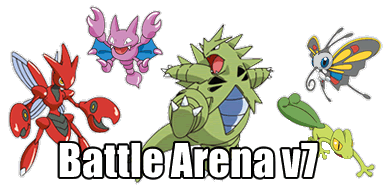

This page is dedicated to the resoration of Pokemon Crater from roughly 2007-2009 era with some modificaitons. This project is entirely for nostalgia reasons and will not directly attract interest in many people nowadays - But if you find this interesting or nostalgic, then I say simply hope that you will find joy from this project.
The famous Pokémon Crater Battle Arena! You can own and battle Pokémon online, as well it is entirely free-to-play with no modern financial gimmicks to gain income - This site does not generate income, or revenue, and is simply for fun.
The website and layout will remain as representative of 2007-2009 while maintaining modern enhancements.